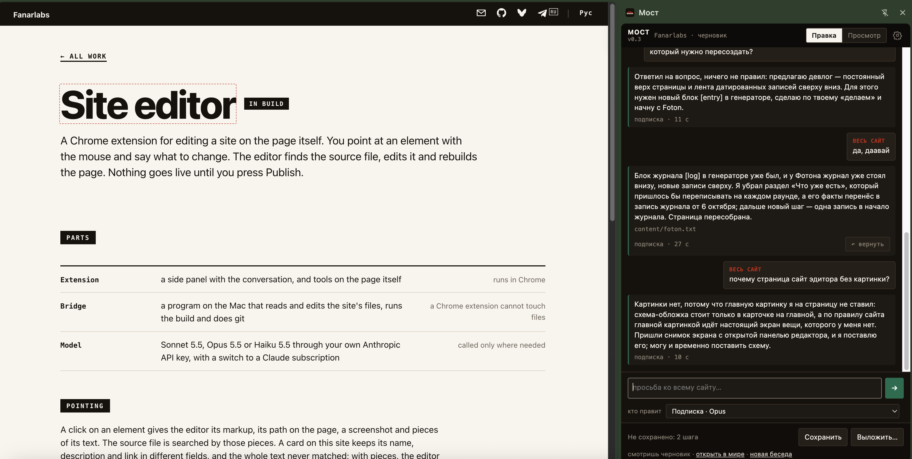

Расширение Chrome для правки сайта прямо на странице. Показываешь мышью элемент и говоришь, что изменить. Редактор находит исходный файл, правит его и пересобирает страницу. В мир правка уходит только по кнопке «Выложить».

Клик по элементу даёт редактору его разметку, путь на странице, снимок и куски текста. Исходный файл ищется по этим кускам. У карточки на этом сайте название, описание и ссылка лежат в разных полях, и целиком текст не находился; по кускам редактор нашёл верный файл, источник каталога, а не страницу проекта.
Маркер на выделенном тексте предлагает три варианта, короче или проще. Блок предлагает ещё такой же, другой вид или убрать. Плюс у края блока добавляет новый, двойной клик печатает на месте. Галочка на странице применяет правку и к версии RU.
Блок переставляется среди соседей: карточка встаёт между карточками. Размер меняется ступенями. Сайт
печатается из текстовых файлов и должен работать на телефоне, поэтому размещение по пикселям туда не
переносится. Редактор пишет только в папку проекта, не трогает .git, а файлы с пометкой
«только читать» остаются как были.
Эта страница и её карточка на главной написаны через редактор, из его панели. Снимок выше сделан по ходу этой работы.
Инструменты переехали на саму страницу: облачко у картинки, маркер на тексте, плюс у края блока. Появились кнопки «Сохранить» и «Выложить», номер версии виден в панели. Рисование картинок ИИ пока отключено.
Закладка стала расширением Chrome. Живой сайт по https не может отправить запрос на http://127.0.0.1, поэтому закладка работала только на локальном черновике. Расширение отправляет из своей панели и работает на fanarlabs.com.
Первая версия — закладка в браузере. Выделяешь фрагмент на странице, и программа на Маке правит исходный файл.